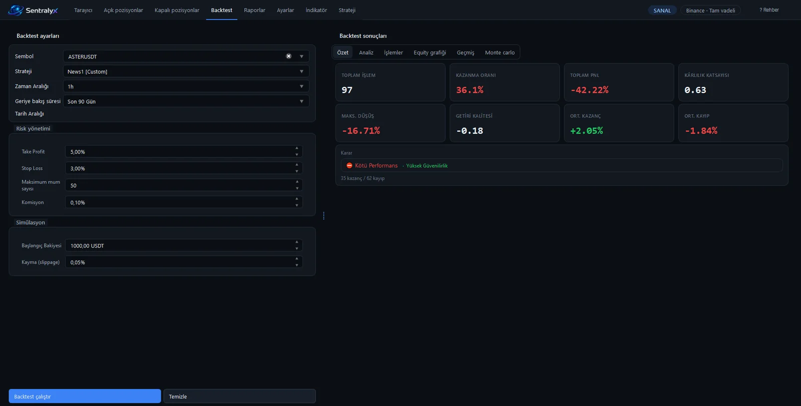

Backtest
Portfolio Backtesting
Test your strategy on historical data including commission and slippage before using real money. Review the result from every angle with the summary, analysis, trades, equity chart and Monte Carlo tabs.

Real app screen, captured in virtual mode.
Set up, run, see the honest result
A backtest result can be good or bad; the point is to learn it without risking real money.
Symbol, strategy and costs
Choose the symbol, strategy, timeframe and lookback period. Enter take profit, stop loss, commission, starting balance and slippage.
- Lookback period (e.g. last 90 days) or date range
- Take profit and stop loss in percent
- Commission and slippage

Summary and equity chart
Total trades, win rate, total PnL, profit factor, maximum drawdown and average win/loss are calculated. The equity chart shows the balance trade by trade.
- The verdict field interprets the result clearly (e.g. Poor Performance)
- Analysis by day, hour and direction
- Trades and history tabs

Separate luck with Monte Carlo
1000 simulations are run with the bootstrap method; the median, best 5% and worst 5% scenarios are compared.
- Median final balance
- Worst and best 5% scenario
- Adjustable number of simulations

What's in the backtest?
Realistic costs and an honest verdict.
Commission and slippage
Results are calculated with commission and slippage simulation.
Equity chart
The balance over time and details of each trade.
Monte Carlo
Distribution of possible outcomes with 1000 simulations.
Day, hour and direction analysis
See under which conditions the strategy weakens.
Verdict
The quality and reliability of the result are interpreted clearly.
Data range
Last 30 days in Free; unlimited in Trial and Full.
Frequently asked questions
Will the backtest result repeat in the future?
No. A backtest result does not guarantee the same result in the future; it shows how the strategy behaved in past conditions.
Is backtesting available in the Free version?
Yes, but in Free it is limited to the last 30 days of data. The data range is unlimited in Trial and Full.
What if the result is bad?
That is the backtest doing its job: you can change your strategy before using real money and re-test it in other periods.
Related pages
Try your strategy in virtual mode today
Download the app, build your strategy and see how it works without using real money.